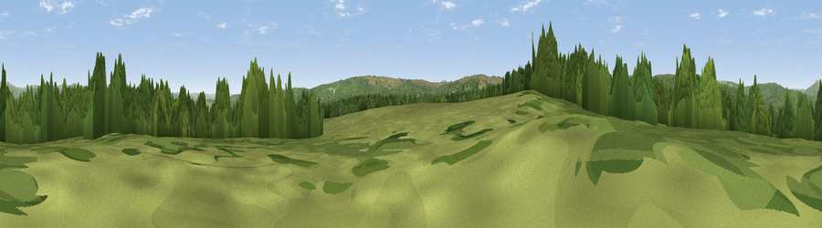

Viewpoint c11724_7258
#33498 in England · top 72% of its area beats it · —The view, rendered

A 360° render of this exact spot computed from the terrain model, tree cover and land cover — summer colours, afternoon light, calibrated against photographs of famous viewpoints. Real trees, hedges and buildings will differ in detail.
The panorama
Grey silhouette: terrain skyline in each direction (720 bearings, Earth curvature and refraction included). Dashed green: skyline with trees (+15 m) and buildings (+8 m) as obstacles. Blue strip: how far the ground is visible on each bearing.
Where the view opens
Wedge length = distance to the farthest visible ground on that bearing (vegetation-aware). Rings at 10, 25 and 50 km.
What fills the view
70% woodland · 29% grassland
Angular shares of the visible panorama (visual magnitude), not map area. Landscape diversity 0.27 (0–1 Shannon).
Key numbers
More beautiful places nearby
The staircase of upgrades: each row has a higher view potential than everything closer. Driving times are estimates from straight-line distance, calibrated against real road routing — check an actual route before setting out.
| Place | Direction | Drive | Score |
|---|---|---|---|
| Viewpoint c11746_7290 | NE · 2 km | ~5 min | 40.0 |
| Viewpoint c11775_7300 | NE · 3 km | ~8 min | 46.2 |
| Viewpoint c11756_7187 | WNW · 4 km | ~9 min | 70.1 |
| Viewpoint c11750_7179 | WNW · 4 km | ~9 min | 70.4 |
| Viewpoint c11634_7288 | SSE · 5 km | ~11 min | 71.8 |
| Sighty Crag | SSW · 6 km | ~13 min | 74.7 |
| Glendhu Hill | W · 6 km | ~13 min | 74.9 |
| Viewpoint c11644_7156 | SW · 6 km | ~14 min | 80.8 |
55.16894, -2.58356 · source: screening · position refined by local search. Computed location — check access rights before visiting.